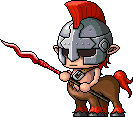

Lv. 88 · #8140102
붉은 켄타우로스
상체는 인간이고 하체는 말의 형태를 하고 있는 정령이다. 머리 양쪽에 뿔이 달린 투구를 쓰고 창을 들고 있어 얼핏 보면 말을 탄 기사처럼 보이기도 한다. 강함을 추구하는 전사의 종족으로, 인간은 헤아리기도 어려울 정도로 긴 시간 동안 서로의 강함을 증명하기 위해 켄타우로스간의 전쟁을 해왔다고 한다.화염의 힘을 가지고 있어 냉속성 공격을 두려워한다.
스탯
레벨 88- HP
- 37.0K
- MP
- 200
- EXP
- 1,600
- 넉백 가능 데미지
- 3000+
- 물리 데미지
- 390
- 마법 데미지
- 430
- 물리 방어력
- 800
- 마법 방어력
- 495
- 속도
- 0
- 88레벨 에서의 필요 명중
- 102.648
- 메소
- 660.0
- 속성관계
- 불속성반감 얼음속성약점
- 체경비
- 23.13
- 형태
- 정령형
출현 지역
출현 맵 5개맵 이름을 누르면 메이플노트의 맵 정보가 열립니다.
드롭 테이블
전체 31개| 아이템 | 아이템 ID | 드롭 확률 |
|---|---|---|
| 켄타우로스의 불꽃 | 4000232 | 60% |
| 마나 엘릭서 | 2000006 | 7% |
| 하얀 포션 | 2000002 | 2% |
| 헬레나의 오래된 장갑 | 4031465 | 0.5% |
| 강철의 원석 | 4010001 | 0.4% |
| 가넷의 원석 | 4020000 | 0.4% |
| 파워 엘릭서 | 2000005 | 0.3% |
| 어둠의 크리스탈 원석 | 4004004 | 0.2% |
| 마법의 돌 | 4006000 | 0.07% |
| 마법의 가루(노랑) | 4007004 | 0.03% |
| 마법의 가루(하얀색) | 4007001 | 0.03% |
| 석궁 제작의 촉진제 | 4130013 | 0.01% |
| 한손검 제작의 촉진제 | 4130002 | 0.01% |
| 장갑 제작의 촉진제 | 4130000 | 0.01% |
| 블레이즈 캡슐 | 2331000 | 0.01% |
| 하프 이어링 | 1032022 | 0.009% |
| 스틸 아퀼라 실드 | 1092023 | 0.009% |
| 장팔사모 | 1432004 | 0.009% |
| 그린 프리아 | 1051068 | 0.009% |
| 블루 리버스부츠 | 1072211 | 0.009% |
| 청운검 | 1402004 | 0.008% |
| 용천권 | 1332023 | 0.008% |
| 그린 로버 | 1082118 | 0.008% |
| 다크 크로스햇 | 1002274 | 0.008% |
| 귀 장식 행운 주문서 60% | 2040321 | 0.006% |
| 장갑 공격력 주문서 10% | 2040805 | 0.004% |
| 신발 점프력 주문서 100% | 2040703 | 0.002% |
| 레드 브레브하말 | 1002643 | 0.0013% |
| 골든 스미스해머 | 1422027 | 0.0003% |
| 화이트 니스록 | 1452019 | 0.0003% |
| 블루마린 | 1382035 | 0.0003% |
조건에 맞는 드롭 아이템이 없습니다.
확률은 메이플노트에 게시된 값입니다. 아이템 이름을 누르면 원본 아이템 정보가 열립니다. 과거 버전 데이터이므로 실제 메이플랜드와 다를 수 있습니다.